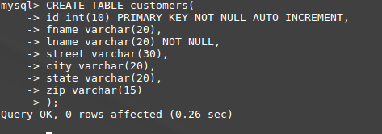
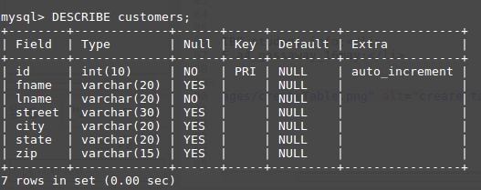

Full Stack! Created by James G / May 2017
I want to be a full stack web developer - but what does that mean?
Use Google Fonts
Use a good, relevant background for more info
In an Interesting way explain "full"
In an Interesting way explain "stack"
In an Interesting way explain "LAMP stack"
Make an in-line links to the key words in these explainations
WHEN DONE WITH THE ABOVE GET A CHECKPOINT GRADE!
Explain Database in general using both text and illustration
Explain MySQL text and illustration
Explain SQL -- what is this, and how is it used?
Explain PHP --what is this, where is it used?
Illustrate a typical DB table use an illustration on this page, not a clickable page. WE WILL DO THIS TOGETHER
List and explain the mysql CLI steps to create a DB, table, records...WE WILL DO THIS TOGETHER
WHEN DONE WITH THE ABOVE GET A CHECKPOINT GRADE!
But What Does "Full" in Full stack mean???
Full means that you develop both the front end, and the back en.
The front end is what the user sees on what is called the client computer.
The back end is what is on the server computer that delivers content to the front.
What does "Stack" in Full Stack Mean?
Stack means that several programs, a "stack" of programs is used.
On the front end I have HTML5, CSS3, and JAvascript.
On the back end, I use PHP, and MySQL.
And I also have a LAMP stack on my comuter.
LAMP is a stack used for our web page server - remember, a server sends web pages
LAMP stands for:
L = Linux, which is the basis of our operating system
A = Apache, which is our web server
M = MySQL, the database we use
P = PHP, which is the programming language we use on the server side
Explain DB: Organized way to save data on a server. LIFEBLOOD of all business, to track employees, customers, products, services, suppliers...
Explain mySQL: Number 2 among the most-used DB's in the world
- Explain MySQL text and illustration
- Enter Password
- mysql>
- show databases;
- create database (name of database);
- SHOW DATABASES;
- USE (name of database);
-
mysql> CREATE TABLE student_info (
-> id int(8),
-> fname varchar(20),
-> lname varchar(20)
-> );
- mysql> DESCRIBE student_info;
- DROP DATABASE a4_gassaway_16may;
-

-
